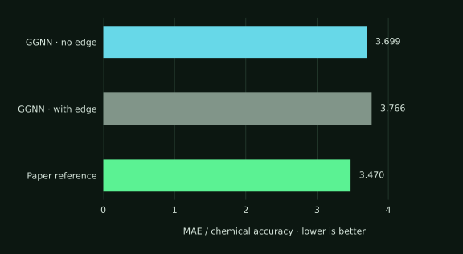
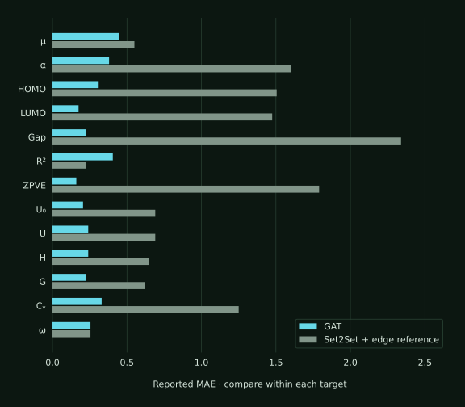
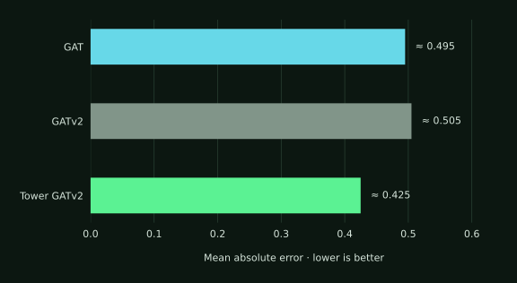
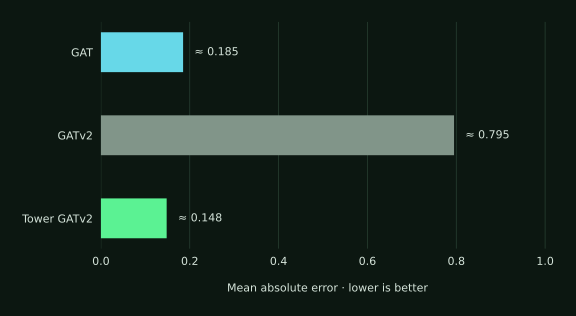
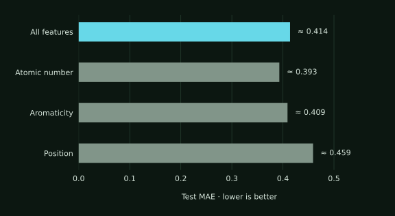

The contribution
The project’s distinctive work is an experimental comparison of attention architectures and molecular feature choices. The experiments compared node-only GAT, edge-aware GATv2, and a tower architecture using GATv2 across molecular prediction tasks. The tower model achieved lower MAE than both other variants on the two highlighted targets: dipole moment and zero-point vibrational energy (ZPVE).
That comparison also challenged the initial hypothesis. Edge-aware GATv2 underperformed even on ZPVE, treated here as an edge-reliant target, while the tower variant recovered the advantage. The findings point toward an interaction between architecture and feature use rather than a simple rule about including or excluding bond information.
1. Establishing a reference, then testing alternatives
QM9 and the message-passing study by Gilmer et al. provided the experimental reference. The replication included an NNConv model with Set2Set pooling and a gated graph neural network (GGNN). To address overfitting in NNConv, the training setup incorporated weight decay, a learning-rate scheduler, and early stopping; its reported final dipole-moment MAE was 0.628.

Baseline calibration
Edges alone barely change the result
The GGNN error ratio was 3.699 without edge features and 3.766 with them, versus 3.470 for the paper reference. The replication is close to that reference, but none of these results reaches chemical accuracy.
The next experiments compared attention variants and tested feature reliance. This moved the investigation beyond reproducing a baseline to examining which combinations of architecture and inputs actually improved predictions.
2. Attention results and the tower advantage

Across 13 targets
A broad advantage, with exceptions
GAT shows lower reported MAE than the Set2Set + edge reference on most targets. The reference performs better on electronic spatial extent (R²), while the final target (ω) is near-equal.
The useful result is the pattern across properties: one architecture does not dominate every target. Matched data splits and training budgets would be needed to establish a benchmark improvement.

Dipole moment
The tower architecture takes the lead
Node-only GAT slightly outperforms edge-aware GATv2, but the tower variant achieves the lowest error of all three.
The initial hypothesis was that edge features might interfere with a target dominated by node information. The next experiment tests that explanation against a different property.

Testing the hypothesis
ZPVE changes the explanation
Despite being treated as an edge-reliant target, ZPVE produces much higher error with standalone GATv2 than with GAT. Yet the tower architecture using GATv2 performs best again.
This challenges the simple node-versus-edge explanation. An architectural mismatch is a plausible explanation for the standalone model’s weakness, rather than evidence that bond information is inherently unhelpful.
3. Feature ablation as a diagnostic

Feature diagnostics
Position shows the largest error
The position configuration has the highest plotted test MAE; the atomic-number configuration has the lowest. All-features and aromaticity results fall between them.
The observed pattern was broadly consistent with the reference study’s feature-importance findings. Without a fully specified removal protocol, these results support a comparison of configurations rather than a recommendation to discard individual inputs.
4. A proposed bond-flow optimization direction
A further research direction explores representing a molecule as a network with flow over bonds, atom-level charge constraints, and bond-dependent costs. The proposed constrained objective is:
- x
- Flow over each bond.
- A
- Graph incidence matrix mapping atoms to bonds.
- b
- Net charge at each atom.
- c
- Edge costs, potentially based on bond length or bond type.
This is a proposed formulation, not an evaluated predictor. Connecting its solution to dipole moment, specifying admissible flows, and validating its physical assumptions remain open steps. Its distinctive idea is to investigate molecular prediction through explicit network constraints alongside the learned models.
5. What the experiments establish
- Architecture matters for feature use. The tower variant achieved the lowest MAE on both highlighted targets, even when standalone edge-aware attention struggled.
- The initial feature-reliance hypothesis did not hold across targets. ZPVE challenged the explanation suggested by the dipole-moment result.
- Ablation adds context to model comparisons. The ablation showed feature-importance patterns broadly consistent with the reference study.
- Network optimization offers a next research question. The bond-flow objective is a starting point for investigation, with no predictive results reported yet.
The observed model ordering motivates further testing with repeated runs and uncertainty estimates. The main finding is the consistent tower advantage across the two focused comparisons.